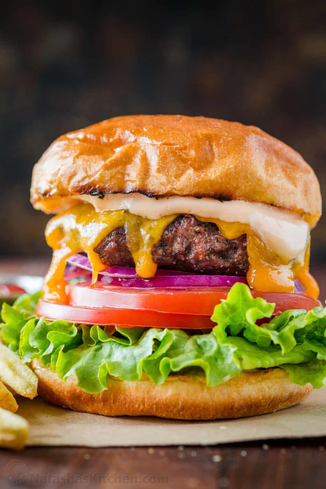

Burger

Description
A hamburger, or simply a burger, is a dish consisting of fillings—usually a patty of ground meat, typically beef—placed inside a sliced bun or bread roll.
Ingredients
- Ground Chuck Beef
- Potato Buns
- Sliced cheese
- Dill pickle slices
- Fresh red onions (or caramelized onions)
- Tomato
- Green leaf or iceberg lettuce
- Avocado
- Bacon + pineapple + the BBQ sauce below
- Jalapeños to add some heat
Sauce
- Mayonnaise - 1/3 cup
- BBQ sauce - 1tbsp
Instructions
-
Shape the patties 1” wider than the bun since they shrink on the grill, don't overwork your meat - this will make it tough and dense.
-
Make an indentation in the center of the patty to prevent it from plumping up in the center.
-
Get a good Sear - Once on the grill, let patties brown and sear well (3-5 min) before flipping
-
Sauce - Apply a generous amount of sauce to both buns.
-
Toppings - Place pickles, lettuce, tomatoes, and red onion onto the bottom bun
-
Patty - Place cheesy burger patty over the veggies and cover with top bun